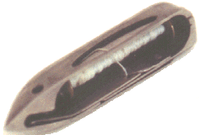
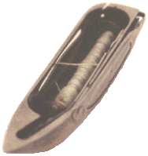

As can be seen from the above illustrations, the Transverse Shuttle is easily recognised by its resemblance to a boat with the bobbin exposed. The shuttle illustrated is from a Frister and Rossmann machine.
A shuttle is called a 'Transverse Shuttle' when it moves from side to side in a straight line. It is called a 'Reciprocating Shuttle' when it moves from front to back in a straight line.
The illustration below shows a transverse shuttle mounted in a Junker and Ruh machine.